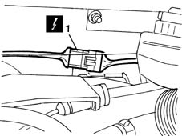
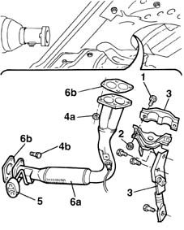
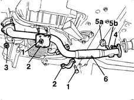

1076B50 exhaust pipe attachment to engine - r + r
- Path
- Procedures > 10 ENGINE UNIT > 1076 EXHAUST PIPES AND SILENCERS > 1076B exhaust pipes and silencers > 1076B50 exhaust pipe attachment to engine - r + r
- Kind
- repair procedure (removal / refitting; the operation number is the code)
- Applies to
- all engines; all production periods
- Interactive page
- https://sloeber94.github.io/elrnDB-fMltpl/en/#/2891293
Applies to: engines: 1.6 16v; all production periods
 Removing
Removing
 Refitting
Refitting1076A74 heat shield for exhaust pipe attachment to manifold - r r
With the ignition key in the OFF position, disconnect the battery negative terminal.
1. Disconnect the electrical connection for the Lambda sensor.
 | Name | Connector |
|---|---|---|
1 | Lambda sensor |
Release the lambda probe electric cables from the bands on the engine bulkhead.

Applies to: engines: 1.6 16v; all production periods
1. Undo the bolts securing the reinforcement bracket to the crankcase.
2. Undo the nuts securing the exhaust pipe reinforcement bracket.
3. Remove the reinforcement brackets from underneath the car.
4. Undo nuts (4a) securing the exhaust pipe to the manifold and unscrew nuts (4b) securing the pipe to the catalytic converter.
5. Remove the rubber block from the pin on the body.
6. Remove the front section of the exhaust pipe (6a). Take care to recover lambda probe electrical lead and both seals (6b) without damaging them.

Applies to: engines: 1.6 16v; all production periods
Refitting
RemovingCheck that the exhaust pipe is not damaged and that its surface is not perforated.
Replace the seals at the ends of the exhaust pipe if necessary.
Fit the exhaust pipe.
Secure the rubber retainer to the pin on the body.
Tighten the bolts securing the exhaust pipe to the manifold to torque.
 | Fastening | Component | Ø | Value (daNm) |
|---|---|---|---|---|
- | Nut | EXHAUST PIPE TO ENGINE | M8 | 2.8 |
Tighten the bolts securing the exhaust pipe to the catalytic converter to torque.
| Fastening | Component | Ø | Value (daNm) |
|---|---|---|---|---|
- | Nut | EXHAUST PIPE TO ENGINE | M8 | 2.4 |
Fit the reinforcement brackets.
Tighten the bracket bolts and nuts to torque.
| Fastening | Component | Ø | Value (daNm) |
|---|---|---|---|---|
- | Nut | STIFFENING REINFORCEMENT | M10 | 4.0 |
| Fastening | Component | Ø | Value (daNm) |
|---|---|---|---|---|
- | Bolt | STIFFENING REINFORCEMENT | M10 | Crankcase end 5 |
Re-position the lambda probe wiring.
Lower the vehicle.
Secure the lambda probe wiring using the collars.
Connect the lambda probe connector.
With the ignition key in OFF position, connect the battery negative terminal.
1076A74 heat shield for exhaust pipe attachment to manifold - r r
Applies to: engines: 1.9 JTD 8V; all production periods
Removing
RefittingPlace the car on a ramp.
1. Undo the nuts securing the reinforcement brackets on the oil sump and engine central mounting.
2. Remove the reinforcement brackets.
3. Undo the nuts securing the exhaust pipe to the manifold.
4. Undo the bolts securing the pipe to the catalytic converter.
5. Release rubber block (5a) from pipe pin (5b).
6. Remove the front exhaust pipe section.
Recover the exhaust pipe gaskets

Applies to: engines: 1.9 JTD 8V; all production periods
Refitting
RemovingFit the exhaust pipe gaskets
Fit the front section of the exhaust pipe.
Secure the pin to its rubber block.
Tighten the bolts securing the exhaust pipe to the catalytic converter.
| Fastening | Component | Ø | Value (daNm) |
|---|---|---|---|---|
- | Bolt | EXHAUST PIPE TO ENGINE | M8 | 2.4 |
Tighten the nuts securing the exhaust pipe to the manifold.
| Fastening | Component | Ø | Value (daNm) |
|---|---|---|---|---|
- | Nut | EXHAUST PIPE TO ENGINE | M8 | 3.2 |
Tighten the nuts securing the reinforcement brackets to the studs on the oil sump.
| Fastening | Component | Ø | Value (daNm) |
|---|---|---|---|---|
- | Nut | EXHAUST PIPE TO ENGINE | M10 x 1.25 | 2.8 |
Tighten the nuts securing the reinforcement brackets to the studs on the engine central mounting.
| Fastening | Component | Ø | Value (daNm) |
|---|---|---|---|---|
- | Nut | EXHAUST PIPE TO ENGINE | M8 | 2.4 |
Topics linked from this page (2)
Topics that link to this page (22)
- 1004B10 power unit with manual gearbox - r + r
- 1004B12 power unit with manual gearbox - r+r for versions with a/c
- 1008A44 rear rigid mount - r r
- 1008B20 power unit intermediate mount flexible block - replace
- 1016C11 single cylinder head-r r gasket for versions with air conditioner
- 1020A20 crank case oil sump - r + r clean seals for sealant application
- 1020D16 front crankshaft oil seal cover - r+r and replace gaskets for versions with airconditioner
- 1020D38 flywheel side oil seal - replace
- 1024B10 engine flywheel - r + r for versions with manual gearbox
- 1028H11 piston connecting rod set - r r
- 1028H12 set of pistons with connecting rods - r r with cylinder head/s removed
- 1064A19 TURBOCHARGER - EXHAUST MANIFOLD - EXHAUST PIPE CONNECTING HOSE - R.R.
- 1076B12 exhaust pipe assembly r+r emission control versions
- 1076B58 exhaust pipe attachment to engine seal/s - replace
- 1810A20 clutch - r + r
- 2110A10 manual gearbox and differential - r + r
- 2110D63 rh differential shaft oil seal - r r
- 4130A10 power steering box - r+r - check tow-in if necessary separately - includes bleeding
- 4130A13 POWER ASSISTED STEERING BOX - R.R. - If necessary. check wheel toe in separately - Includes. bleeding air - on right hand drive versions
- 4410D13 front suspension beam - r r
- 4410D14 front suspension crossbeam - r+r with wishbones removed
- 4410D20 front suspension intermediate beam - r r